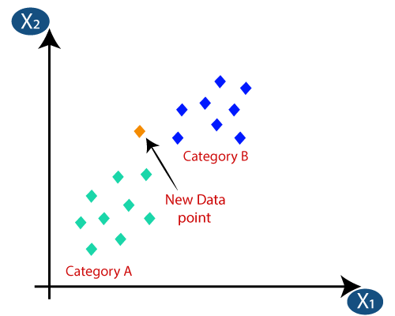
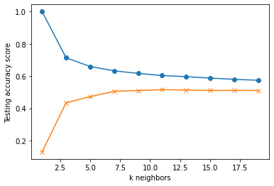
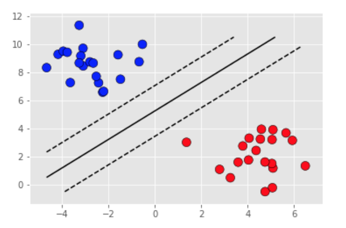

K Nearest Neighbors
The first non-linear model that we tried was a k-Nearest Neighbors Regressor. This regression model requires an additional step of determining the most appropriate value of k to use for the regression. We graphed the testing accuracy for odd values of k from 1 to 19, and the graph appeared to level off around k = 7. We decided to try using k = 5, 7, and 9 to see if any of them produced better results than the multiple linear regressors.
For k = 5, we got an R2 value of 51.442%. For k = 7, we got an R2 value of 51.758%. For k = 9, we got an R2 value of 51.844%. None of the k-Nearest Neighbor models performed better than the multiple linear regression models. Additionally, the k-Nearest Neighbors models appeared to overfit the data, since the R2 values for the training data set were significantly higher than the R2 values for the testing data set.

*KNN concept. Credit: https://www.javatpoint.com/k-nearest-neighbor-algorithm-for-machine-learning

Support Vector Regression
Our next approach was to use a Support Vector Regressor. This regressor resulted in an R2 value of 54.430%. This model performed better than any of the previous models, and did not overfit the data. We continued trying other models with the aim of producing a model that performs better.

*SVR concep. Credit: UofM class slides
Random Forest Regression
0.5533. Getting there, but not something we could work with.
 *Random Forest concept. Credit: https://levelup.gitconnected.com/random-forest-regression-209c0f354c84
*Random Forest concept. Credit: https://levelup.gitconnected.com/random-forest-regression-209c0f354c84